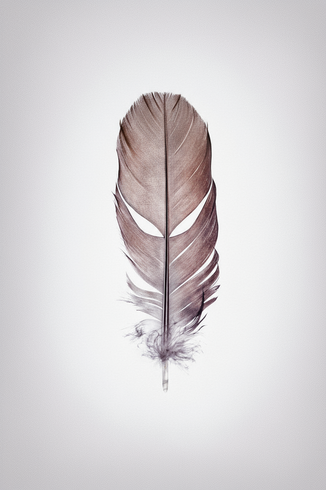

This documentary blew me away! I was not only blindsided
by the crazy twists and turns, but most of all I was really impressed
with the thoroughness of the director in pursuing the story and
uncovering the truth no matter how many threats and dead ends
he encountered.